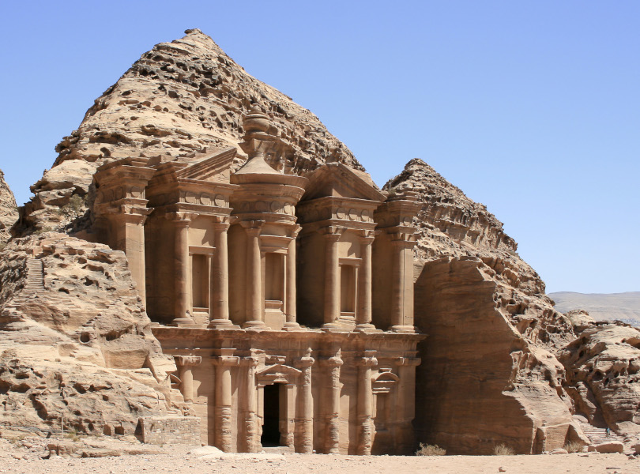
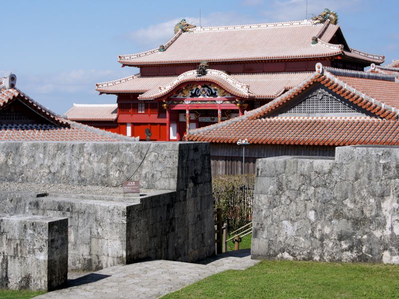
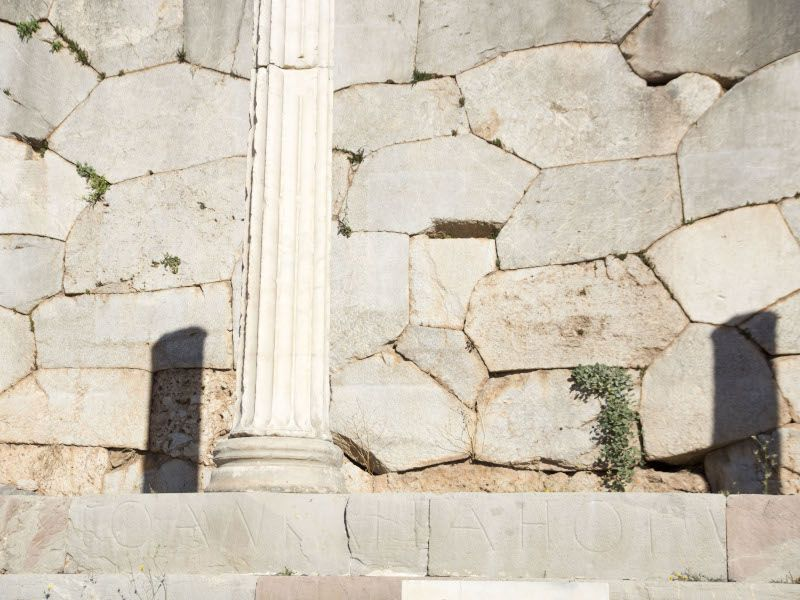

Megalithic Contruction
Styles and Periods
?
-
Who..
were the brilliant people creating things that cannot be equaled today
-
What..
technology and techniques were used to build such impressive structures
-
When..
were the periods of the different building styles
-
Where..
can these structures be found
-
How..
did we lose the ability and knowledge to build in this manner
Styles of Build
-
Rock Cut/Cyclopian
Oldest known, most heavily eroded, including roads/vehicle tracks and unearthed subterranian complexes
-
Pancake
Usually older, vertically stacked, eliptically shaped or "melted" appearing stones
-
Polygonal
Massive stones perfectly interlocked, usually using no mortar or bonding medium
-
Modern
Most recent, little to zero erosion, very artistic and refined
Timeline
Most building took place during these times in each given period/epoch
-
Neogene Period
15-5 million years ago
Rock cut and cyclopian cities and structures, above and below ground, foundations, roads, terraces, wells, pits, etc..
-
Pleistocene Epoch
40-25 thousand years ago
Megalithic and underground structures, monoliths, cromlechs, dolmens, and stone circles
-
Early Holocene Epoch
11.7 thousand years ago
More of the structures as seen in previous epoch, sometimes with wood still remaining incorperated into the structures

Older Rock Cut Style
Due to their age and level of erosion, less data can be gathered from this style than from other megalithic build styles.
Examples of old rock cut style
-

Gerdek Rock Tomb
Çorum, Turkey
By Carole Raddato - Flickr, CC BY 2.0, Link -
Tatlarin
Cappadocia, Turkey
By Katpatuka at Turkish Wikipedia., Public Domain, Link -

Grottes de Calès
Lamanon, France
By BlueBreezeWiki - Own work, CC BY-SA 3.0, Link
Newer Rock Cut Style

Examples of newer rock cut style
-

Longmen Grottoes
Henan, China
By Ishai Bar (Headrock) - Own work , Public Domain, Link -

Kailasa Temple
Ellora Caves, Maharashtra, India
By Y.Shishido - , CC BY-SA 3.0, Link -
 El Deir
Petra, Jordan
By Diego Delso, CC BY-SA 3.0, Link
Pancake style


Polygonal style
Examples of polygonal style
-
Cheops Pyramid
Giza Plateau, Cairo, Egypt
By Olaf Tausch - Own work, CC BY 3.0, Link -
 Seiden, Shuri Castle
Okinawa, Japan
By 663highland - Own work, CC BY 2.5, Link -
 Delphi
Delphi, Greece
By Gwhobbs - Own work, CC BY-SA 4.0, Link
Modern style
More modern examples
-

Saint Petersburg Canal System
Saint Petersburg, Russia
(Lomonosov Bridge) CC BY-SA 3.0, Link -

Taj Mahal
Agra, India
© Yann Forget / Wikimedia Commons, CC BY-SA 4.0, Link -

Kremlin / Red Square
Moscow, Russia
By Крылов Иван - Own work, CC BY-SA 4.0, Link
Now let's look at some perhaps less known about but extremely interesting locations and phenomena
-
Ancient Vehicle Tracks
Found worldwide in the Neogene Planation Plain -
Underwater Megaliths and Cities
Occur in oceans, seas, bays, lakes, and major rivers worldwide, ranging from great depths to being partially submerged -
Columnar Basalt Structures
Found clustered vertically or stacked as foundations for structures and even entire islands -
Dolmens
Two or more vertical megaliths combined with a horizontal capstone, usually forming a chamber
Ancient Vehicle Tracks
More ancient vehicle tracks
-

Misraħ Għar il-Kbir
Malta
By Lysy - Own work, CC BY-SA 3.0, Link -

Uplistsikhe
Shida Kartli, Georgia
By Kober - Own work, Public Domain, Link -

Poblado íbero Castellar de Meca
Valencia, Spain
De Rubén Ojeda, CC BY-SA 4.0, Enlace
Submerged Megaliths and Cities
-
Yonaguni Monument
Yonaguni, Okinawa, Japan
By Melkov - Own work, CC0, Link -
Atlit Yam
Atlit, Israel
By Hanay, CC BY-SA 3.0, Link -
Shi Cheng
Qiandao Lake, Zhejiang, China
By Nihaopaul - Own work, CC BY-SA 3.0, Link
Columnar Basalt
-

Nan Madol
Pohnpei, Micronesia
By NOAA -, Public Domain, Link -

Cape Stolbchaty, Kunashir Island
Sakhalin Oblast, Russia
By Екатерина Васягина - Own work, CC BY-SA 4.0, Link -

Giant's Causeway
Antrim, Northern Ireland
By code poet on flickr. -, CC BY-SA 2.0, Link
Dolmens
-

Dolmen near Gelendzhik
Krasnodar, Russia
CC BY-SA 3.0, Link -
Lanyon Quoit
Cornwall, UK
By Olaf Tausch - Own work, CC BY 3.0, Link -
Ganghwa Island Dolmen
Incheon, South Korea
By Taewangkorea - Own work, CC BY-SA 4.0, Link
There are many different types of dolmen
Passage Grave Type
Vera Island, Lake Turgoyak
Chelyabinsk Oblast, Russia
-
Simple Dolmen
Two vertical stones or rubble sidestones with one capstone -
Great Dolmen
Larger version of simple dolmen with three or more capstones -
Polygonal Dolmen
Five to nine sidestones with a polygonal chamber -
Passage Grave
A passage of large stones covered with earth or smaller stones -
Rectangular or Extended Dolmen
Two capstones with a rectangular or trapezoidal chamber layout
The more we study these unbelievably and expertly crafted marvels, the more we realize how far we have to go in understanding how they were built, by whom, when, and why.